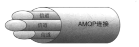
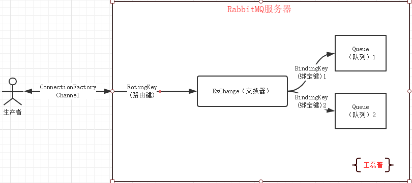

------------恢复内容开始------------
在介绍RabbitMQ之前实现要介绍一下MQ，MQ是什么？
MQ全称是Message Queue，可以理解为消息队列的意思，简单来说就是消息以管道的方式进行传递。
RabbitMQ是一个实现了AMQP（Advanced Message Queuing Protocol）高级消息队列协议的消息队列服务，用Erlang语言的。
在我们秒杀抢购商品的时候，系统会提醒我们稍等排队中，而不是像几年前一样页面卡死或报错给用户。
像这种排队结算就用到了消息队列机制，放入通道里面一个一个结算处理，而不是某个时间断突然涌入大批量的查询新增把数据库给搞宕机，所以RabbitMQ本质上起到的作用就是削峰填谷，为业务保驾护航。
现在的市面上有很多MQ可以选择，比如ActiveMQ、ZeroMQ、Appche Qpid，那问题来了为什么要选择RabbitMQ？
生产者、消费者和代理
在了解消息通讯之前首先要了解3个概念：生产者、消费者和代理。
生产者：消息的创建者，负责创建和推送数据到消息服务器；
消费者：消息的接收方，用于处理数据和确认消息；
代理：就是RabbitMQ本身，用于扮演“快递”的角色，本身不生产消息，只是扮演“快递”的角色。
消息发送原理
首先你必须连接到RabbitMQ才能发布和消费消息，那怎么连接和发送消息的呢？
你的应用程序和Rabbit Server之间会创建一个TCP连接，一旦TCP打开，并通过了认证，认证就是你试图连接Rabbit之前发送的Rabbit服务器连接信息和用户名和密码，有点像程序连接数据库，使用Java有两种连接认证的方式，后面代码会详细介绍，一旦认证通过你的应用程序和Rabbit就创建了一条AMQP信道（Channel）。
信道是创建在“真实”TCP上的虚拟连接，AMQP命令都是通过信道发送出去的，每个信道都会有一个唯一的ID，不论是发布消息，订阅队列或者介绍消息都是通过信道完成的。
1. TCP的创建和销毁，开销大，创建需要三次握手，销毁需要四次分手。
2. 如果不使用信道，那么引用程序就会使用TCP的方式连接到rabbitmq，高峰时每秒成千上万条连接会造成资源的巨大浪费(一条tcp消耗资源，成千上万的tcp会非常消耗资源)，而且操作系统每秒处理TCP连接数量也是有限的，必定会造成性能瓶颈。
3.信道的原理是一条线程一条信道，多条线程多条信道共同使用一条TCP连接。一条TCP连接可以容纳无限的信道，及时每秒造成成千上万的请求也不会造成性能瓶颈。

想要真正的了解Rabbit有些名词是你必须知道的。
包括：ConnectionFactory（连接管理器）、Channel（信道）、Exchange（交换器）、Queue（队列）、RoutingKey（路由键）、BindingKey（绑定键）。
ConnectionFactory（连接管理器）：应用程序与Rabbit之间建立连接的管理器，程序代码中使用；
Channel（信道）：消息推送使用的通道；
Exchange（交换器）：用于接受、分配消息；
Queue（队列）：用于存储生产者的消息；
RoutingKey（路由键）：用于把生成者的数据分配到交换器上；
BindingKey（绑定键）：用于把交换器的消息绑定到队列上；
看到上面的解释，最难理解的路由键和绑定键了，那么他们具体怎么发挥作用的，请看下图：

Rabbit队列和交换器有一个不可告人的秘密，就是默认情况下重启服务器会导致消息丢失，那么怎么保证Rabbit在重启的时候不丢失呢？答案就是消息持久化。
当你把消息发送到Rabbit服务器的时候，你需要选择你是否要进行持久化，但这并不能保证Rabbit能从崩溃中恢复，想要Rabbit消息能恢复必须满足3个条件：
持久化工作原理
Rabbit会将你的持久化消息写入磁盘上的持久化日志文件，等消息被消费之后，Rabbit会把这条消息标识为等待垃圾回收。
持久化的缺点
消息持久化的优点显而易见，但缺点也很明显，那就是性能，因为要写入硬盘要比写入内存性能较低很多，从而降低了服务器的吞吐量，尽管使用SSD硬盘可以使事情得到缓解，但他仍然吸干了Rabbit的性能，当消息成千上万条要写入磁盘的时候，性能是很低的。
所以使用者要根据自己的情况，选择适合自己的方式。
每个Rabbit都能创建很多vhost，我们称之为虚拟主机，每个虚拟主机其实都是mini版的RabbitMQ，拥有自己的队列，交换器和绑定，拥有自己的权限机制。
vhost特性
RabbitMQ默认的vhost是“/”开箱即用；
多个vhost是隔离的，多个vhost无法通讯，并且不用担心命名冲突（队列和交换器和绑定），实现了多层分离；
创建用户的时候必须指定vhost；
vhost操作（具体命令见下一章内容）
可以通过rabbitmqctl工具命令创建：
rabbitmqctl add_vhost[vhost_name]
删除vhost：
rabbitmqctl delete_vhost[vhost_name]
查看所有的vhost：
rabbitmqctl list_vhosts